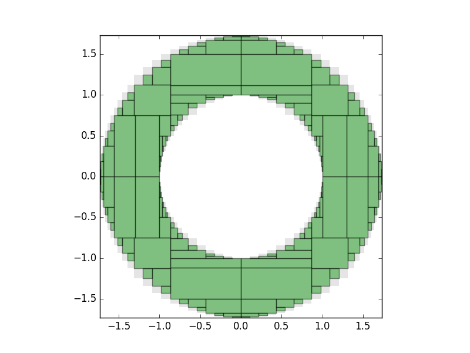

IntervalConstraintProgramming.jl
This Julia package allows you to specify a set of constraints on real-valued variables, given by (in)equalities, and rigorously calculate inner and outer approximations to the feasible set, i.e. the set that satisfies the constraints.
This uses interval arithmetic provided by the author's IntervalArithmetic.jl package, in particular multi-dimensional IntervalBoxes, i.e. Cartesian products of one-dimensional intervals.
To do this, interval constraint programming is used, in particular the so-called "forward–backward contractor". This is implemented in terms of separators; see [Jaulin & Desrochers].
Usage
Let's define a constraint, using the @constraint macro:
julia> using IntervalConstraintProgramming, IntervalArithmetic
julia> S = @constraint x^2 + y^2 <= 1
Separator:
- variables: x, y
- expression: x ^ 2 + y ^ 2 ∈ [-∞, 1]It works out automatically that x and y are variables. The macro creates a Separator object, in this case a ConstraintSeparator.
We now create an initial interval box in the $x$–$y$ plane:
julia> x = y = -100..100 # notation for creating an interval with `IntervalArithmetic.jl`
julia> X = IntervalBox(x, y)The @constraint macro defines an object S, of type Separator. This is a function which, when applied to the box $X = x \times y$ in the x–y plane, applies two contractors, an inner one and an outer one.
The inner contractor tries to shrink down, or contract, the box, to the smallest subbox of $X$ that contains the part of $X$ that satisfies the constraint; the outer contractor tries to contract $X$ to the smallest subbox that contains the region where the constraint is not satisfied.
When S is applied to the box X, it returns the result of the inner and outer contractors:
julia> inner, outer = S(X);
julia> inner
([-1, 1],[-1, 1])
julia> outer
([-100, 100],[-100, 100])Without using Macros
We can also make an object S, of type Separator or C, of type Contractor without using Macros, for that you need to define variables using ModelingToolkit.jl. Example
julia> using IntervalConstraintProgramming, IntervalArithmetic, ModelingToolkit
julia> @variables x y
(x(), y())
julia> S = Separator(x+y<1)
Separator:
- variables: x, y
- expression: x() + y() == [-∞, 1]
julia> C = Contractor(x+y)
Contractor in 2 dimensions:
- forward pass contracts to 1 dimensions
- variables: Symbol[:x, :y]
- expression: x() + y()While making Separatoror Contractor's object we can also specify variables, like this
julia> vars = @variables x y z
(x(), y(), z())
julia> S = Separator(vars, x+y<1)
Separator:
- variables: x, y, z
- expression: x() + y() == [-∞, 1]
julia> C = Contractor(vars, y+z)
Contractor in 3 dimensions:
- forward pass contracts to 1 dimensions
- variables: Symbol[:x, :y, :z]
- expression: y() + z()We can make objects (of type Separator or Contractor)by just using function name (Note: you have to specify variables explicitly as discussed above when you make objects by using function name). We can also use polynomial function to make objects.
julia> vars=@variables x y
(x(), y())
julia> f(a,b)= a+b
f (generic function with 1 method)
julia> C = Contractor(vars,f)
Contractor in 2 dimensions:
- forward pass contracts to 1 dimensions
- variables: Symbol[:x, :y]
- expression: x() + y()
julia> f(a,b) = a+b <1
f (generic function with 1 method)
julia> S=Separator(vars, f)
Separator:
- variables: x, y
- expression: x() + y() == [-∞, 1]
julia> using DynamicPolynomials #using polynomial functions
julia> pvars = @polyvar x y
(x, y)
julia> f(a,b) = a + b < 1
p (generic function with 1 method)
julia> S=Separator(pvars, f)
Separator:
- variables: x, y
- expression: x() + y() == [-∞, 1]BasicContractor
Objects of type Contractor have four fields (variables, forward, backward and expression), among them data of two fields (forward, backward) are useful (i.e forward and backward functions) for further usage of that object, thats why it is preferred to use an object of type BasicContractor in place of Contractor which only contain these two fields for less usage of memory by unloading all the extra stuff.(Note: Like object of Contractor type,BasicContractor's object will also have all the properties which are discussed above).
julia> @variables x y
(x(), y())
julia> C = BasicContractor(x^2 + y^2)
Basic version of ContractorSet inversion: finding the feasible set
To make progress, we must recursively bisect and apply the contractors, keeping track of the region proved to be inside the feasible set, and the region that is on the boundary ("both inside and outside"). This is done by the pave function, that takes a separator, a domain to search inside, and an optional tolerance:
julia> using Plots
julia> x = y = -100..100
julia> S = @constraint 1 <= x^2 + y^2 <= 3
julia> paving = pave(S, X, 0.125);pave returns an object of type Paving. This contains: the separator itself; an inner approximation, of type SubPaving, which is an alias for a Vector of IntervalBoxes; a SubPaving representing the boxes on the boundary that could not be assigned either to the inside or outside of the set; and the tolerance.
We may draw the result using a plot recipe from IntervalArithmetic. Either a single IntervalBox, or a Vector of IntervalBoxes (which a SubPaving is) maybe be drawn using plot from Plots.jl:
julia> plot(paving.inner, c="green")
julia> plot!(paving.boundary, c="gray")The output should look something like this:

The green boxes have been rigorously proved to be contained within the feasible set, and the white boxes to be outside the set. The grey boxes show those that lie on the boundary, whose status is unknown.
3D
The package works in any number of dimensions, although it suffers from the usual exponential slowdown in higher dimensions ("combinatorial explosion"); in 3D, it is still relatively fast.
There are sample 3D calculations in the examples directory, in particular in the solid torus notebook, which uses GLVisualize.gl to provide an interactive visualization that may be rotated and zoomed. The output for the solid torus looks like this:

Set operations
Separators may be combined using the operators ! (complement), ∩ and ∪ to make more complicated sets; see the notebook for several examples. Further examples can be found in the repository IntervalConstraintProgrammingNotebooks.
Author
- David P. Sanders
- Julia lab, MIT
- Departamento de Física, Facultad de Ciencias, Universidad Nacional Autónoma de México (UNAM)
References:
- Applied Interval Analysis, Luc Jaulin, Michel Kieffer, Olivier Didrit, Eric Walter (2001)
- Introduction to the Algebra of Separators with Application to Path Planning, Luc Jaulin and Benoît Desrochers, Engineering Applications of Artificial Intelligence 33, 141–147 (2014)
Acknowledements
Financial support is acknowledged from DGAPA-UNAM PAPIME grants PE-105911 and PE-107114, and DGAPA-UNAM PAPIIT grant IN-117214, and from a CONACYT-Mexico sabbatical fellowship. The author thanks Alan Edelman and the Julia group for hospitality during his sabbatical visit. He also thanks Luc Jaulin and Jordan Ninin for the IAMOOC online course, which introduced him to this subject.